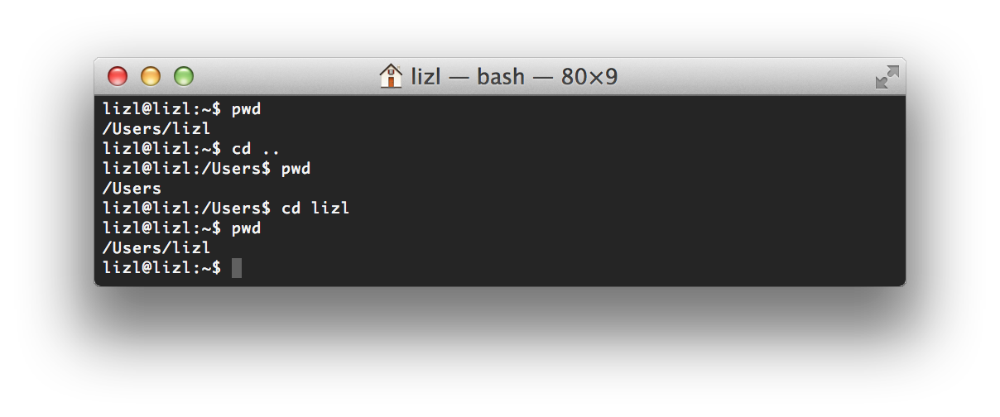

Unix Command Line Basics
What is a Shell?
A text-based command interpreter
The most common shell (and default on OS X) is BASH
For OS X, use a shell via the “Terminal” app
For Windows, we could use PowerShell, but today, we'll use ConEmu
The Shell

The Prompt
Usually shows your username and computer name (hostname).
It indicates that the shell is ready for you to enter a command.
Prompt

Command Structure
$ command -options targetsDon’t forget to hit enter at the end of each command.
The Current Directory
pwd
(Print Working Directory)
Type it whenever you want to see what directory (folder) you’re in.
pwd
(print working directory)

Directories
Containers for files or other directories.
Also referred to as "folders".
Nested files and directories can be referenced using paths.
File Paths
A sequence of nested directories, with a file or directory at the end.
Each directory or file is separated by a forward slash "/".
Two Types of Paths:
Relative: Desktop/Photos/grumpycat.jpg
Absolute: /Users/paigecrum/Desktop/Photos/grumpycat.jpg
Shortcuts
- Current Directory: (.)
- Parent Directory: (..)
- Home Directory: (~)
- Root Directory: (/)
Change Directory
cd
Use the cd command to change directories.
Expects a file path as an argument.
If no file path is given, it assumes your home directory (~) by default.
cd
(change directory)
There are 2 other ways that we could have gotten to our home directory...what are they?
Clear your Terminal
clear
The clear command clears the contents of the terminal and issues a prompt.
Feel free to use this whenever things get too cluttered.
List Directory
ls
Use the ls command to list the contents of a directory.
Expects a file path as an argument.
If no file path is given, it assumes the current directory by default.
ls
(list directory)

Flags
Some commands have additional options that you can specify by using flags.
Flags are preceded by a hyphen, and are often a single character.
$ ls -a$ ls -lls -a
-a = show hidden files

Notice that hidden file names begin with a "."
ls -l
-l = use a “long list” format (shows more verbose output)

ls -al
Show hidden files and use a long list format

You can combine flags or list them separately separated by spaces. (e.g. ls -a -l)
File Names
- case sensitive
- any character (besides “/”)
- file extensions are for user convenience
Examples:
README .bashrc index.html index.html.old Bugs List.txtMaking and Removing Directories
Use the mkdir command to create a new empty directory.
Use the rmdir command to remove an empty directory.
Use rm -r to remove a non-empty directory
...be careful!
All 3 commands expect the name of a directory as an argument.
mkdir, rmdir
(make directory, remove directory)

Exercise 1
- Change to your personal server folder
- Create a jobtrain/practice directory path
- Navigate into the jobtrain/practice directory
- Create a CLI directory
- View the contents of the CLI directory
- Navigate up two directories
- Use the pwd command to verify you are home
- Remove the jobtrain/practice/CLI path
Create a File
touch
Use the touch command to create a new file.
The touch command expects the name of your new file as an argument.
touch
(create a file)

Copy a File
cp
Use the cp command to copy a file.
The cp command takes two arguments:
1st argument = the "origin" file
2nd argument = the "destination" file
$ cp resume.txt resume-copy.txtcp
(copy a file)
$ cp origin destination

Copy a Directory
cp -R
Use the cp -R command to copy a directory.
The cp -R command takes two arguments:
1st argument = the "origin" directory
2nd argument = the "destination" directory
$ cp -R homework old-homeworkcp -R
(copy a directory)
$ cp -R origin destination

Moving (or renaming) a File/Directory
Use the mv command to move a file or directory.
The mv command takes two arguments:
1st argument = the "origin"
2nd argument = the "destination"
Move a File/Directory
mv origin destination

Rename a File/Directory
mv orig dest

Remove a File
rm
Use the rm command to remove a file.
Expects the name of the file you are removing as an argument.
rm
(remove a file)

Exercise 2
- Create a folder called cli
- Make that folder your current working directory
- Create two files: file1.txt, file2.txt
- Copy file1.txt and call the copy file3.txt
- Create a directory called folder1
- Move file1.txt into folder1
- List the contents of folder1 without going into it
- Rename file1.txt to myfile.txt
- Remove the directory folder1, without deleting myfile.txt first
- Clear your terminal
View a File
cat, more, less
Use the cat command to output (catenate) the contents of a file to the console.
Use the more or less commands to read a file:
- more allows you to step through the contents of a file a screen at a time
- less allows you to step backwards or forwards
- Press q to exit out of this mode
cat
(catenate)
will output the entire file

more

less

Edit a File
You can use various editors built into bash:
$ vi myfile.txt
$ emacs myfile.txt
$ pico myfile.txt
Or on a Mac, you can open with any desktop app:
$ open -a TextEdit myfile.txtOr with the default editor:
$ open -t myfile.txtSearch within a File
grep
Use the grep command to search in files.
The grep command outputs only the lines in a file that match a given pattern.
The 1st argument is the pattern to match, and the 2nd, 3rd, and so on are the files to search within.
$ grep pattern filegrep
(search within a file for text that matches a pattern)

Wildcard Matching
Use the * (asterisk) symbol to match anything.
You can use this to search through all of a particular file type.
$ grep hello *.txtThe shell will build a list of all the files that match the non-asterisk part.
Finding Files
find
Use the find command to find files according to name/metadata.
Find all txt files under the current directory:
find . -name '*.txt' -printfind
(finding files)

Redirecting Output
By default, input comes from the screen and output goes to the screen.
You can use < and > to redirect input/output.
A practical example: Save results of search in a file:
grep hello *.txt > results.txtRedirecting Output

Redirecting Output
Use the echo command to add a new line of text.
Use the > to replace the contents of a file.
Use the >> to add to the end of a file.
Redirecting Output

Exercise 3
- In the cli directory, output the contents of file2.txt to the terminal
- Add a sentenceto file2.txt
- Add a few more sentences to file2.txt
- Search the file for the word of your choice and add the results to file3.txt
Command Line Movement
- ctrl-a: jump to beginning of line
- ctrl-e: jump to end of line
- alt-f: jump forward a word
- alt-b: jump back a word
- alt-d: delete word
- alt-t: transpose two words
- ctrl-xx: jump back to your last edit, again to get back to original position
More Command Line Movement
- The left/right arrow keys let you edit within a command
- The up/down arrow keys let you select previous commands
- tab auto-completes filenames
Lots more, and you can create your own.
Command Line History
Use the history command to see a list of all your previous commands.
Each command will be listed next to a line number.
A few history-related commands:
- !!: Latest command
- !568: Command by line #
- !open: Command matching string
history

Exercise 4
- Use your up and down arrows to locate a past command with one or more arguments
- Jump to the beginning of the line
- Jump to the end of the line
- Look at your command line history
- Begin to type a previous command and experiment with using tab to complete it